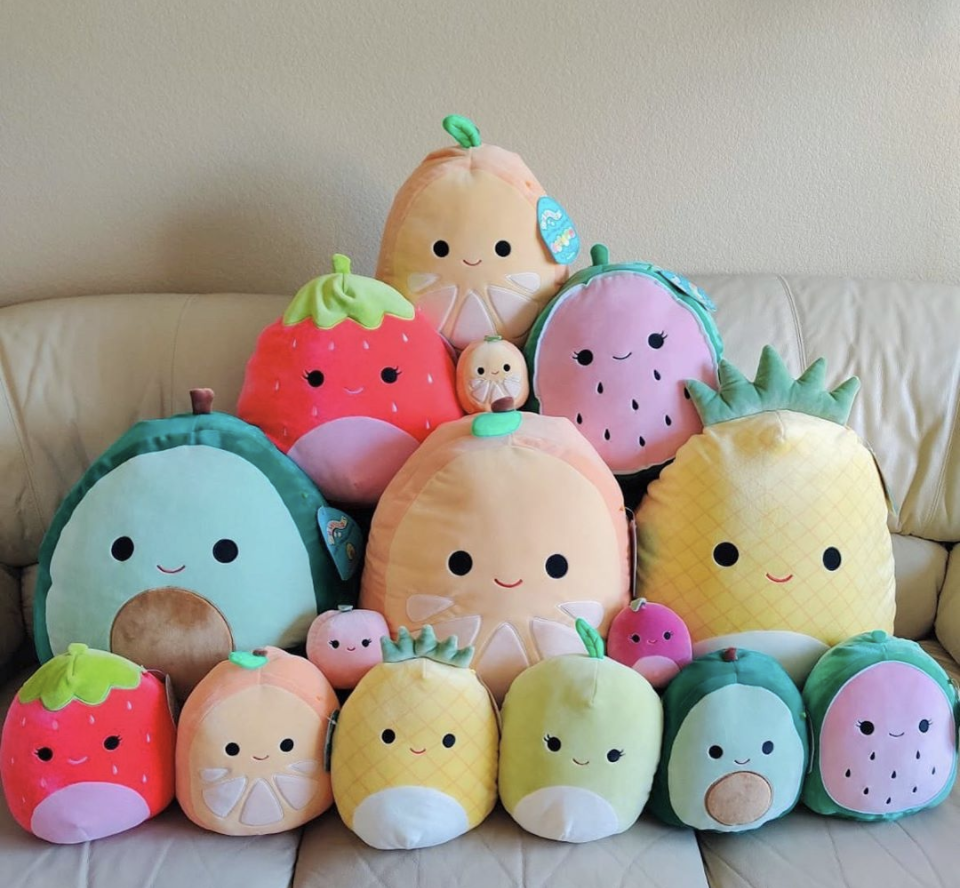

Many of the rarest Squishmallows are exclusives, either through certain stores or a limited time (or both). One of the reasons Mariah is so rare is that she was an Aldi grocery store exclusive in the second half of 2020. The 7” baby squad Squishmallows are all a bit rare, but Mariah is the rarest of all.
Image result for what to look for when buying squishmallows It Never Hurts to Double-Check The first should say "Original Squishmallows: Squeeze and Cuddle Me." The second should say Kelly Toys, plus information about Squishmallows. The final tag includes the toy's ID and batch number. All real Squishmallows, regardless of where they are sold, have these tags.

Where to buy?